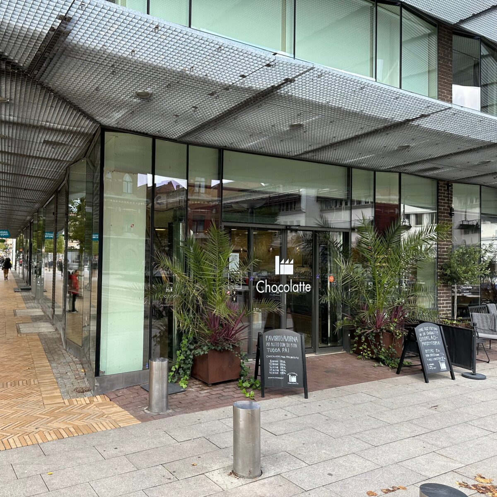

Rudolf undrar ifall
tekniknisse inte är lite...
SNURRIG
Idag öppnar vi den första luckan
i vår digitala kalender
Rudolf undrar ifall
tekniknisse inte är lite...
SNURRIG
För det första verkar
han inte hålla reda
på dagens datum
Döenkelt, tycker Rudolf
det är ju 'idag'
det är det ju alltid
För det andra är det ju PÅSEN
som är det roliga!?
För det tredje
är Rudolf rätt säker på
att tekniknisse har
missuppfattat CHOKLAD
Den ska man ju ÄTA
inte GE BORT
Fast han tycker förstås att
är smaskens!
Tomtens medhjälpare har
för övrigt använt samma
leverantör som förra året
